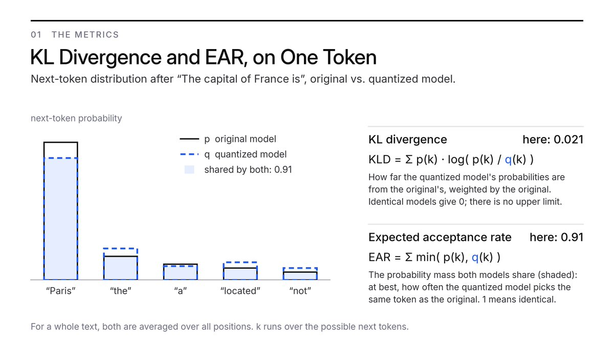
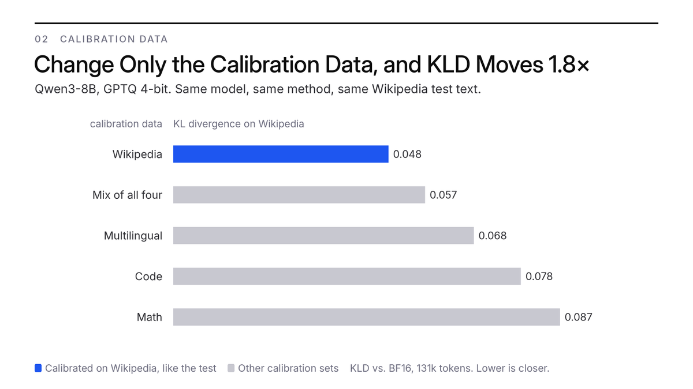
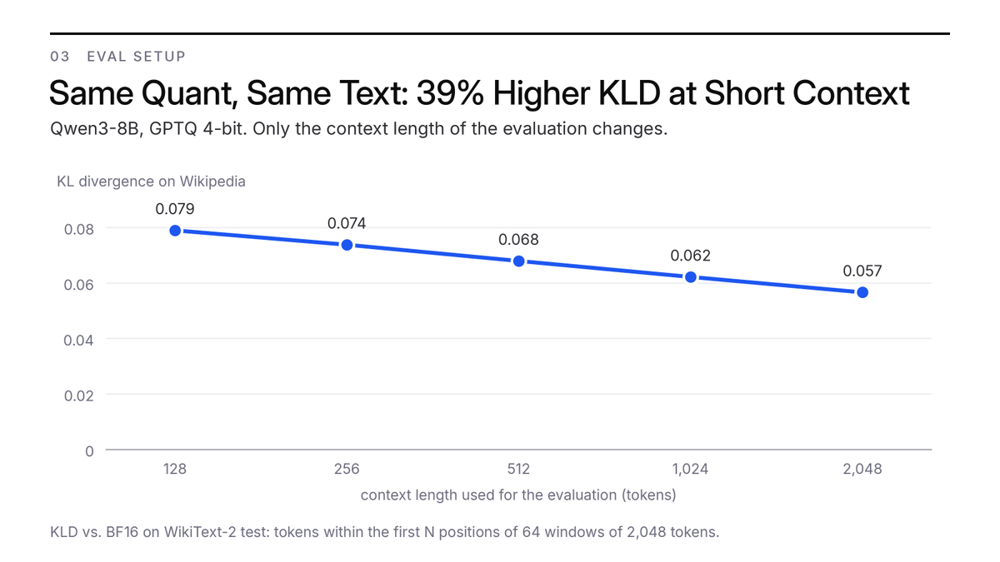
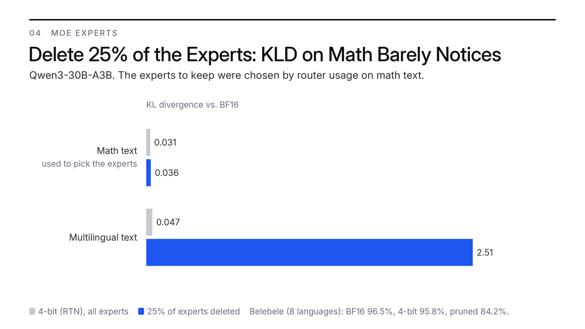
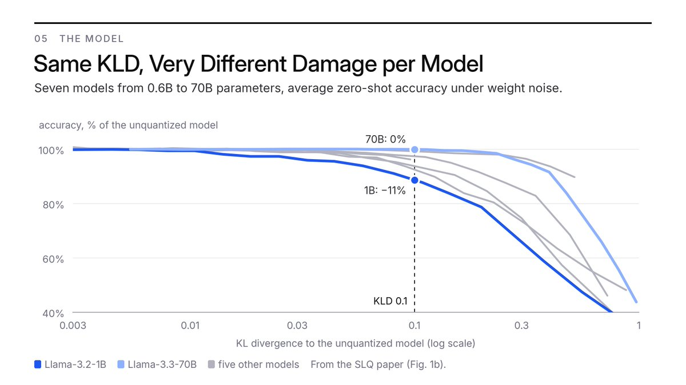

围绕GSQ-RCO模型，常被问到一个问题：为何不报告KL散度（KLD）？是不是零样本结果看起来比KLD好看，或者算出KLD不好所以藏起来？这个问题在763B的DeepSeek-V4.1-Flash-GSQ-RCO发布后尤其多，回答来自一篇由Reddit帖子扩展而来的长文。
简短版本：如果对任务基准心存怀疑，对KLD更应该怀疑。KLD数字要容易得多，同一模型在通常不报告的选择下能得到很不一样的KLD。不少人把KLD当成能区分所有量化模型并按质量排名的神圣指标：它做不到。
同一文本同时喂给基模型与量化模型，比较二者在每个token处由logits得到的概率分布，KLD度量这两个分布的差异，再对全部token取平均。

单token示例里KLD为0.021，单看这个数字几乎说明不了什么；EAR为0.91，意味着量化模型至少9%的情况下选出与原模型不同的token。
EAR恰好就是把量化模型当作推测解码草稿模型时的接受率，来自无损量化论文《Statistically-Lossless Quantization of Large Language Models》。
KLD没有直观刻度：0.044算好还是坏，很难说；EAR可以直接读。在自身答案上，GPTQ 4-bit Qwen3-8B的KLD为0.044，换算成EAR约每17个token选错1个；RTN 8-bit约每109个选错1个；GPTQ 3-bit约每8个选错1个。
EAR更容易读，但测量方式与KLD相同：下面六个维度同样影响它。
同一量化模型的KLD可能截然不同，取决于：
每个维度都做了实验，结果如下。
同一批量化、不同文本：排名翻转。最先可能出错的地方，是随手抓些随机文本（比如一堆维基百科文章）算KLD。但这不一定代表模型推理时真正看到的东西：生成过程中，上下文里越来越大的部分是模型自己生成的token，喂随机文本无法复现这一点。
在Qwen3-8B上用五个仅校准数据不同的GPTQ 4-bit量化验证：按维基百科KLD排名，维基百科校准的排第一；按模型自身答案的KLD排名，它掉到五名中的第四。
更合理的做法：用基模型自己生成数据集，再在生成的token上算KLD，提示词token权重给零。
只改校准数据，KLD移动1.8倍。量化方法常依赖校准数据；在同一数据上算KLD，数字会比别人好看得多。即使声称用了留出数据集，KLD依然不可信：校准集与评估集可能同源或分布高度相似。
同一模型、同一4-bit方法、同一维基百科测试文本，只改校准数据：KLD从0.048变到0.087。维基百科校准的量化在维基百科文本上胜出；数学校准的在数学上胜出（0.021），在维基百科上垫底。每个量化在自己校准的那类文本上看起来最好。

3-bit模型几分钟就能拿到4-bit模型的KLD。KLD极其容易操纵，尤其数字来自模型制作者自身时：有人甚至会在同一数据上端到端微调量化缩放参数，模型突然在KLD上击败两倍于自己的模型，而在数据集之外几乎无法泛化。
实验验证：取3-bit GPTQ Qwen3-8B，只训练量化缩放参数、以WikiText-2测试集上的KLD为目标，仍是纯3-bit模型。测试集KLD从0.205降到0.048，与4-bit模型持平；留出维基百科文本KLD为0.149，比4-bit差三倍；GSM8K调优后85.6%、调优前86.0%，4-bit模型为90.8%。
4-bit模型的KLD，3-bit模型的精度，单卡几分钟完成。
只改上下文长度，KLD移动39%。即使没人动手脚，不同人的KLD数字也不可比：每次KLD评估都有旋钮：哪段文本、多少token、参考模型用BF16还是Q8、每个token给多少上下文。
只看其中一个旋钮，上下文长度：同一量化、同一维基百科文本，128 token上下文时KLD为0.079，2048 token时为0.057，39%的波动来自多数人从不报告的设置。

删掉25%的专家，合适文本上的KLD几乎注意不到。混合专家模型让问题更严重：每个token只经过少数专家，KLD只度量测试文本实际路由到的专家；某个专家在数据上从不触发，量化得再差甚至删掉，KLD都不会发现。
实验：取Qwen3-30B-A3B，删掉25%的专家，保留在数学文本上路由器最常用的那些。数学文本上，剪枝模型的KLD为0.036，与4-bit量化的0.031差不多；GSM8K几乎不动（92.8%，BF16为93.2%）。多语言文本上，KLD为2.51，比4-bit差50倍以上，多语言基准Belebele从96.5%掉到84.2%。

用德语问疫苗如何训练免疫系统，模型回答：“Es gibt no such thing as 'Impfung' in the context of training the immune system. It seems there might be a typo or misunderstanding in your question.”
改按维基百科挑选专家，剪枝模型在维基百科KLD上甚至击败4-bit（0.028对0.052）。
即使文本与设置完全相同，KLD数字也无法从一个模型搬到另一个模型。SLQ论文给0.6B到70B的七个模型加权重噪声，追踪平均零样本精度随KLD的变化：
Llama-3.2-1B在KLD约0.014时损失1%精度；Llama-3.3-70B到约0.23才损失1%，高17倍。KLD为0.1时，1B模型损失11%精度，70B模型分文不损。对一个模型合适的KLD，对另一个可能是坏的。

要看情况。KLD度量的是量化模型在非常有限的数据集上偏离基模型的程度；更高的KLD是否意味着量化模型会在实际任务上失败？当然不是。
实验里两个方向都出过问题：测试集上调优的3-bit模型拿到了4-bit模型的KLD，却只有3-bit模型的精度；按维基百科剪枝的MoE在代码、数学与多语言文本上的KLD是4-bit的13到26倍，GSM8K与Belebele得分却与4-bit差不多。
KLD还只是平均值：在模型自身答案上，1%的token约占KLD总量的四分之一。
基准分数确实可以操纵，但对量化模型制作者而言，操纵基准要难得多：往往需要大量硬件与额外算力，而把KLD做得好看可以便宜得离谱。
所以不依赖KLD。KLD不是唯一的陷阱：饱和的零样本基准也不是答案。在HellaSwag、PIQA、ARC-Easy这类任务上，任何合理的4-bit量化都落在BF16模型的噪声范围内，无法区分量化好坏。应该看的是：
请停止把KLD当成量化模型的通用排行榜：它是有用的诊断工具，不是模型好坏的度量。
模型：Qwen3-8B与Qwen3-30B-A3B-Instruct-2507，对照各自BF16权重。量化：仅权重量化，组大小128、非对称；GPTQ用128条2048 token序列校准；MoE的4-bit基线用最近取整（RTN）。
KLD：每个token在完整词表上计算；Qwen3-8B每类文本131k token、MoE为65k（自身答案：生成token分别为181k与48k）。文本类型：维基百科（WikiText-2）、代码（evol-codealpaca）、数学（MATH）、多语言（8种语言的FLORES段落），以及模型对128个提示词的自身答案。
MoE剪枝：按262k token数学文本上的路由器使用量给每层专家排序，移除使用量最低的25%。缩放调优：只训练每组量化缩放参数，在64条WikiText-2测试序列上以KLD为损失训练4轮。
基准：GSM8K（250题，贪心，无思考）与Belebele（8种语言400题，段落未在别处用过）。第六维度的按模型曲线来自SLQ论文的权重噪声扫描（图1b），数值从图上读出。
参考：https://x.com/mhelcig/status/2115515450356539696